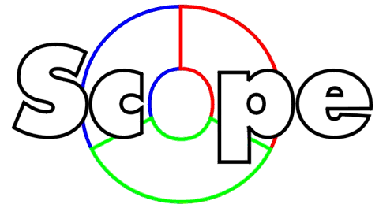
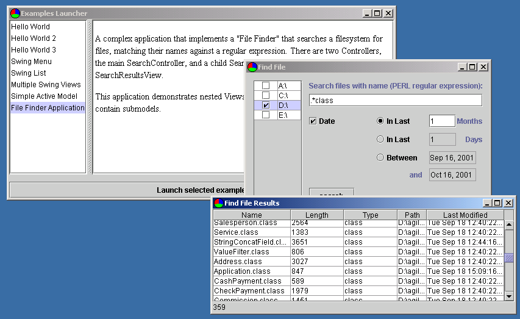

Scope is a framework built around an extensible implementation of the Hierarchical Model-View-Controller (HMVC) pattern similar to the pattern described in HMVC: The layered pattern for developing strong client tiers . It provides an easy-to-use Java library that can be used as a basis for component-oriented application development following the layered architecture detailed in Sun's J2EE and in Cheesman/Daniels: UML Components .
Applications developed using Scope are "view-agnostic": a Swing application uses the same infrastructure and patterns as a web application that happens to use XML/XSLT to generate HTML, or a JSP-based application. The framework has been used in production systems built using the default Swing and XML/XSL Servlet implementations, as well as proprietary VoiceXML, ColdFusion and custom XML/XSLT implementations.
Scope provides the following major subsystems:
Scope is distributed with a set of samples designed to act as tutorials
in the use of various features of the framework. A Swing based Launcher
allows documentation to be viewed while running the Swing examples from
a simple GUI:

The sample code also includes web-based applications using the XML/XSL and JSP Servlet implementations. The "servletsamples" distribution includes a deployable war that allows the servlet examples to be run.
A Yahoo eGroup has been set up by Scope users to discuss their experiences. A FAQ is also being compiled by list members -- a useful resource for all users. For further information: http://groups.yahoo.com/group/scope-dev-framework
An independent Introduction to Scope presentation is distributed as part of the documentation, courtesy of Julia Reynolds at InPhact.
The source for Scope is released under the BSD Open Source License, which allows commercial development projects built with Scope to be distributed under non-Open Source licenses.
Feedback on any aspect of Scope is welcome. Offers of help on any aspect of Scope is even more welcome! I'm Steve Meyfroidt, based in Kendal, UK but currently working in Mumbai, India for a few months. My email address is: smeyfroi@users.sourceforge.net.